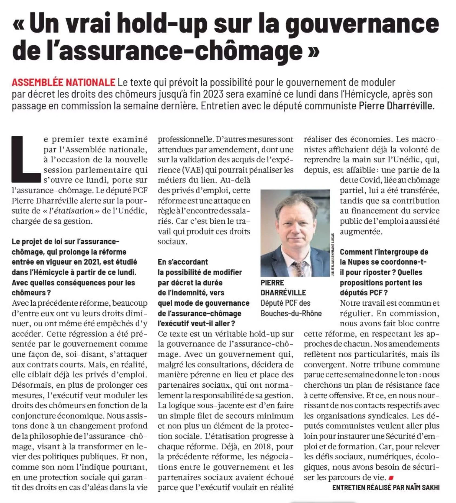

Publication relayée par le PCF 79
Assurance chômage. Un entretien de Pierre Dharréville dans L’Humanité
Date de mise à jour indiquée par Facebook · 3 octobre 2022
Texte de la publication · Les députés communistes
Ce soir démarre l'examen du projet de loi sur la réforme de l'assurance chômage, un texte qui poursuit la déconstruction de notre protection sociale.
Lire l'entretien de Pierre Dharréville paru dans l'Humanité du jour

Sources
Les députés communistes · publication relayée par le PCF 79 · bibliothèque Facebook · AR-0002-FB-01848
À lire aussi · Retraites. Les députés communistes réagissent au retrait de l’article d’abrogation